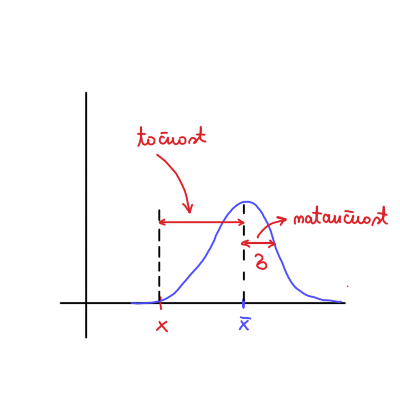

2026/02/24
Neznana količina, ki jo merimo, je \( x \). Imamo dva seta meritev, oba porazdeljena po normalni porazdelitvi
\[ z_1 \sim N (x, \sigma_1 ^2 ) \quad \text{ in } \quad z_2 \sim N(x, \sigma_2 ^2) \]
Note
O točnosti in natančnosti: Razdalja med pričakovana vrednostjo \( x \) in njeno povprečno vrednostjo \( \bar{x} \) je točnost, medtem ko odstopanje od povprečne vrednosti pa je natančnost.
Velika netočnost je ponavadi rezultat sistematska napaka.

Predpostavimo, da so naši izmerki natančni.
Naša seta meritev napišemo kot vsoto pričakovane vrednosti in šuma, ki sta oba razporejena po normalni porazdelitvi.
\[ z_1 = x + r_1; \quad r_1 \sim N (0, \sigma_1 ^2) \quad \text{ in } \quad z_2 = x + r_2; \quad r_2 \sim N(0, \sigma_2 ^2) \]
Če imamo odvisne meritve (šume), potem zapišemo
\[ r_2 = \alpha r_1 + w; \quad w \sim N(0, \sigma_w ^2) \]
Varianca \( \sigma_2 ^2 \) je po definiciji
\[ \sigma_2 ^2 = \left\langle \left( z_2 - x \right) ^2 \right\rangle = \left\langle r_2 ^2 \right\rangle. \]
Upoštevamo odvisnost meritve (šumov) in varianca postane
\[\begin{align*} \sigma_2 ^2 &= \left\langle r_2 ^2 \right\rangle \\ &= \left\langle \left( \alpha r_1 + w \right) ^2 \right\rangle \\ &= \left\langle \alpha ^2 r_1 ^2 + 2\alpha r_1 w + w ^2 \right\rangle \\ &= \alpha ^2 \sigma_1 ^2 + \sigma_w ^2 \end{align*} \]Člen \( \left\langle r_1 w \right\rangle \) je kovarianca in ker je \( r_2 = r_2 (r_1, w) \) in sta \( r_1 \) in \( w \) neodvisni, je njuna kovarianca ničelna.
Sledi, da dobimo zapis
\[ 1 = \left( \alpha \frac{\sigma_1}{\sigma_2} \right) ^2 + \left( \frac{\sigma_w}{\sigma_2} \right) ^2, \]
iz česar vidimo, da je korelacijski koeficient \( \rho_{12} = \left( \alpha \frac{\sigma_1 }{\sigma_2} \right) ^2 \) omejen na intervalu
\[ 0 \le \left( \alpha \frac{\sigma_1}{\sigma_2} \right) ^2 \le 1 \implies -1 \le \rho_{12} \le 1 \]
V primeru \( \rho_{12} = 0 \) je popolna neodvisnost spremenljivk, v primeru \( \rho = \pm 1 \) imamo pa popolno korelacijo.
Kovarianca je po definiciji
\[ \sigma_{12} = \left\langle \left( z_1 - x \right) \left( z_2 - x \right) \right\rangle = \left\langle r_1 r_2 \right\rangle. \]
Upoštevamo definicije šumov in dobimo
\[ \sigma_{12} = \left\langle r_1 \left( \alpha r_1 + w \right) \right\rangle = \alpha \sigma_1 ^2, \]
saj je kovarianca \( \left\langle r_1 w \right\rangle = 0\).
Če se vrnemo h korelacijskemu faktorju,
\[ \rho_{12} = \alpha \frac{\sigma_1}{\sigma_2}, \]
ki ga pomnožimo z \( \sigma_1 \sigma_2 \), potem lahko zapišemo kot
\[ \rho_{12} \sigma_1 \sigma_2 = \alpha \sigma_1 ^2 = \sigma_{12} = \rho_{12} \sigma_1 \sigma_2 \]
Imamo večjo kombinacijo spremenljivk
\[\begin{align*} u_1 &= f_1 (x_1, x_2, \ldots, x_n) \\ u_2 &= f_2 (x_1, x_2, \ldots, x_n) \\ &\vdots \\ u_n &= f_n (x_1, x_2, \ldots, x_n), \end{align*} \]kjer so \( x_1, x_2, \ldots, x_n \) količine, ki jih merimo. Uvedemo vektorski zapis
\[ \mathbf{x} = \begin{bmatrix} x_{1} \\ x_{2} \\ \vdots \\ x_{n} \end{bmatrix} \quad \text{ in } \quad \mathbf{u} = \begin{bmatrix} u_{1} \\ u_{2} \\ \vdots \\ u_{n} \end{bmatrix} \]
Za \( \mathbf{x} \) poznamo ocene, ki jih označimo kot
\[ \bar{\mathbf{x}} = \begin{bmatrix} \bar{x}_{1} \\ \bar{x}_{2} \\ \vdots \\ \bar{x}_{n} \end{bmatrix}. \]
Dejanska vrednost \( \bar{x}_i \) je vsota ocene \( x_i \) in šuma \( m_i \)
\[ \bar{x}_i = x_i + m_i; \quad m_i \sim N(0, \sigma_1 ^2). \]
Kovarianca je po definiciji
\[ \delta_{ij} = \left\langle (\bar{x}_{i - x_i}) \left( \bar{x}_j - x_j \right) \right\rangle = \left\langle m_i m_j \right\rangle. \]
V primeru \( i = j \) dobimo \( \sigma_i ^2 = \left\langle (\bar{x}_i - x_i) ^2 \right\rangle = \sigma_i ^2 \), kar je že zapis variance znotraj zapisa za kovarianco!
Uvedemo kovariantno matriko, katere elementi so
\[ \left( M \right)_{ij} = \sigma_{ij} = \left\langle (\bar{x}_i - x_i) \left( \bar{x}_j - x_j \right) \right\rangle = \left\langle m_i m_j \right\rangle. \]
Matrični zapis kovariantne matrike je
\[ M = \left\langle \left( \bar{\mathbf{x}} - \mathbf{x} \right) \left( \bar{\mathbf{x}} - \mathbf{x} \right)^T \right\rangle =\left\langle \mathbf{m} \mathbf{m}^T \right\rangle. \]
Lastnosti kovariantne matrike so
Za vektor \( \mathbf{u} = \left( f_1 (\mathbf{x}), f_2 (\mathbf{x}), \ldots, f_n (\mathbf{x}) \right) \) nas zanima ocena \( \bar{\mathbf{u}} \), zato da lahko izračunamo kovariantno matriko \( U \).
Po definiciji je kovariantna matrika
\[ U = \left\langle \left( \bar{\mathbf{u}} - \mathbf{u} \right) \left( \bar{\mathbf{u}} - \mathbf{u} \right)^T \right\rangle. \]
Ocene ne poznamo, zato postopamo podobno kot zadnjič, ko razvijemo po Taylorju
\[ \mathbf{u} = \begin{bmatrix} f_1 (\bar{\mathbf{x}}) \\ f_2 (\bar{\mathbf{x}}) \\ \ldots \\ f_n (\bar{\mathbf{x}}) \end{bmatrix} + J_{\mathbf{u}}(\mathbf{x}) \left( \mathbf{x} - \bar{ \mathbf{x}} \right) + o(x ^2), \]
kjer je \( J_{\mathbf{u}} \) Jacobijeva matrika. Ocena je potem
\[ \bar{\mathbf{u}} = \begin{bmatrix} f_1 (\bar{\mathbf{x}}) \\ f_2 (\bar{\mathbf{x}}) \\ \vdots \\ f_n (\bar{\mathbf{x}}) \end{bmatrix} + J_{\mathbf{u}} (\bar{\mathbf{x}}) \left( \bar{\mathbf{x}} - \bar{\mathbf{x}} \right) = \begin{bmatrix} f_1 (\bar{\mathbf{x}}) \\ f_2 (\bar{\mathbf{x}}) \\ \vdots \\ f_n (\bar{\mathbf{x}}) \end{bmatrix}, \]
saj je drugi člen ničeln.
Torej
\[ \bar{\mathbf{u}} - \mathbf{u} = J_{\mathbf{u}} (\bar{\mathbf{x}}) \left(\bar{ \mathbf{x}} - \mathbf{x} \right). \]
Kovariantna matrika je potem
\[\begin{align*} U &= \left\langle \left( \bar{\mathbf{u}} - \mathbf{u} \right)\left( \bar{\mathbf{u}} - \bar{u} \right)^T \right\rangle \\ &= \left\langle J_{\mathbf{u}} \left( \bar{\mathbf{x}} \right) \left( \bar{\mathbf{x}} - \mathbf{x} \right) \left( \bar{\mathbf{x}} - \bar{x} \right)^T J_{\mathbf{u}}^T (\bar{\mathbf{x}}) \right\rangle \\ &= J_{\mathbf{u}} (\bar{\mathbf{x}}) M J_{\mathbf{u}}^T (\bar{\mathbf{x}}). \end{align*} \]Upoštevali smo, da velja \( \left\langle J_{\mathbf{u}} (\bar{\mathbf{x}})\right\rangle = J_{\mathbf{u}}(\bar{\mathbf{x}}) \), saj je to matrika konstant. Spomnimo se še definicije Jacobijeve matrike, ki je
\[ J_{\mathbf{u}}(\mathbf{x}) = \begin{bmatrix} \frac{\partial f_{1}}{\partial x_{1}} & \frac{\partial f_{1}}{\partial x_{2}} & \ldots & \frac{\partial f_{1}}{\partial x_{n}} \\ \vdots & & & \\ \vdots & & & \\ \frac{\partial f_{n}}{\partial x_{1}} & \frac{\partial f_{n}}{\partial x_2} & \ldots & \frac{\partial f_{n}}{\partial x_{n}} \end{bmatrix} \]
Imamo delec, ki se premika s hitrostjo \( v \). Imamo dva senzorja, ki se nahajata na koordinatah \( x_1 \) in \( x_2 \). Čas za prelet intervala je \( \Delta t \). Senzor 1 ima oceno meritev \( \bar{x}_1 \) in nedoločenost \( \sigma_1 \). Senzor 2 ima oceno meritve \( \bar{x}_2 \) in nedoločenost \( \sigma_2 \). Senzorja sta neodvisna.
Izračunaj kovariantno matriko za vektor \( \mathbf{u} = (x_1, x_2, v)^T \).
Vektor ocen je
\[ \bar{\mathbf{x}} = \begin{bmatrix} \bar{x}_{1} \\ \bar{x}_{2} \end{bmatrix}. \]
Kovariantna matrika je
\[ M = \begin{bmatrix} \sigma_{1} ^2 & \\ & \sigma_2 ^2 \end{bmatrix}, \]
saj je kovarianca senzorjev 0 zaradi neodvisnosti.
Vektor ocene je
\[ \bar{\mathbf{u}} = \begin{bmatrix} \bar{x}_{1} \\ \bar{x}_{2} \\ \bar{v} \end{bmatrix}, \]
želimo pa izračunati kovariantno matriko \( U \).
Odvisnost hitrost od meritve je
\[ v = \frac{x_2 - x_1}{\Delta t}. \]
Vektor, za katerega računamo, je v odvisnosti od meritev
\[ \mathbf{u} = \begin{bmatrix} x_{1} \\ x_{2} \\ v \end{bmatrix} = \begin{bmatrix} f_{1}(\mathbf{x}) \\ f_2 (\mathbf{x}) \\ f_3 (\mathbf{x}) \end{bmatrix}. \]
Jacobijeva matrika je potem
\[ J_{\mathbf{u}} = \begin{bmatrix} 1 & 0 \\ 0 & 1 \\ - \frac{1}{\Delta t} & \frac{1}{\Delta t} \end{bmatrix}. \]
Kovariantna matrika je potem po definiciji
\[\begin{align*} U &= J_{\mathbf{u}} M J_{\mathbf{u}}^T \\ &= \begin{bmatrix} 1 & 0 \\ 0 & 1 \\ - \frac{1}{\Delta t} & \frac{1}{\Delta t} \end{bmatrix} \begin{bmatrix} \sigma_1 ^2 & \\ & \sigma_2 ^2 \end{bmatrix} \begin{bmatrix} 1 & 0 & - \frac{1}{\Delta t} \\ 0 & 1 & \frac{1}{\Delta t}\end{bmatrix} \\ &= \begin{bmatrix} \sigma_1 ^2 & 0 & - \frac{\sigma_1 ^2}{\Delta t} \\ 0 & \sigma_2 ^2 & \frac{\sigma_2 ^2}{\Delta t} \\ -\frac{\sigma_1 ^2}{\Delta t} & \frac{\sigma_2 ^2}{\Delta t} & \frac{\sigma_1 ^2 \sigma_2 ^2}{\left( \Delta t \right) ^2} \end{bmatrix} \end{align*} \]Želimo doseči optimalno združevanje meritev, kjer bomo besedo optimalno še definirali.
Ocenjujemo neznano konstantno količino \( x \), za katero imamo dve oceni/meritvi
\[ z_1 = x + r_1; \quad \left\langle r_1 ^2 \right\rangle = \sigma_1 ^2 \quad \text{ in } \quad z_2 = x + r_2; \quad \left\langle r_2 ^2 \right\rangle = \sigma_2 ^2, \]
kjer velja
\[ \left\langle r_1 r_2 \right\rangle = \sigma_{12} \ne 0. \]
Izmerjeni oceni želimo združiti v novo oceno za \( x \), ki jo označimo z \( \tilde{x} \). Zanjo zahtevamo, da je \( \left\langle \tilde{x} \right\rangle = x \) (pričakovana vrednost nove ocene je še zmeraj \( x \)). Zapišemo
\[ \tilde{x} = x + \tilde{r}. \]
Novo oceno zapišemo z nastavkom linearne kombinacije ocen
\[ \tilde{x} = a z_1 + b z_2. \]
Zahtevamo linearno kombinacijo, saj samo \( z_1 \) ne bi zadostil pogoju \( \left\langle \tilde{x} \right\rangle = x \).
Razpišemo vse količine
\[\begin{align*} \tilde{x} = x + \tilde{r} &= a \left( x + r_1 \right) + b (x + r_2) \\ x + \tilde{r} &= x (a + b) + ar_1 + b_2 && \left/ \left\langle \cdot \right\rangle \right. \\ x &= x (a + b), \end{align*} \]kjer dobimo pogoj \( a + b = 1 \) oz. \( a = 1 - b \).
Novo oceno torej lahko zapišemo kot
\[ \tilde{x} = (1 - b) z_1 + z_2 = z_1 + b (z_2 - z_1). \]
Členu \( (z_2 - z_1) \) pravimo inovacija, \( b \) pa pravimo utež/faktor. Člen se imenuje inovacija, saj \( z_1 \) nenehno z večanjem meritev popravlja drugi člen.
V primeru vrednosti \( b = \frac{1}{2} \) dobimo ravno povprečje
\[ \tilde{x} = z_1 + \frac{1}{2} (z_2 - z_1) = \frac{z_1 + z_2}{2} = \bar{z}, \]
kar pomeni, da je povprečje dobra, vendar ne optimalna ocena.
Iščemo \( b_0 \) - optimalno utež - ki nam poda optimalno oceno (optimalno združevanje \( z_1 \) in \( z_2 \)).
Beseda optimalno pomeni, da je napaka minimalna. Optimalno oceno bomo označili z \( \tilde{x} = \hat{x} \). Z drugimi besedami zapisan pogoj za optimalno oceno je, da zahtevamo najmanjšo varianco.
\[ \frac{\mathrm{d} \tilde{\sigma} ^2}{\mathrm{d} b} = 0 \implies b_0. \]
Zapišemo varianco po definiciji
\[ \tilde{\sigma} ^2 = \left\langle \tilde{r} ^2 \right\rangle = \left\langle \left( (1 - b)r_1 + br_2 \right) ^2 \right\rangle, \]
ki jo kvadriramo in dobimo
\[\begin{equation} \begin{aligned} \tilde{\sigma} ^2 &= \left\langle \left( 1 - b \right) ^2 r_1 ^2 + b ^2 r_2 ^2 + 2 (1 - b) b r_1 r_2 \right\rangle \\ &= \left( 1 - b \right) ^2 \sigma_1 ^2 + b ^2 \sigma_2 ^2 + 2 (1 - b) b \sigma_{12}, \end{aligned}\label{ali:vari} \end{equation} \]kjer smo upoštevali \( \left\langle r_1 ^2 \right\rangle = \sigma_1 ^2 \) in \( \left\langle r_2 ^2 \right\rangle = \sigma_2 ^2 \).
Za minimum moramo odvajati in dobimo
\[ \frac{1}{2} \frac{\mathrm{d} \tilde{\sigma} ^2}{\mathrm{d} b} = b_0 \left( \sigma_1 ^2 + \sigma_2 ^2 - 2 \sigma_{12} \right) - \sigma_1 ^2 + \sigma_{12}, \]
iz česar zaključimo
\[ b_0 = \frac{\sigma_1 ^2 - \sigma_{12}}{\sigma_1 ^2 + \sigma_2 ^2 - 2 \sigma_{12}}. \]
Optimalna ocena je torej
\[\begin{equation} \label{eq:2} \hat{x} = z_1 + \frac{\sigma_1 ^2 - \sigma_{12}}{\sigma_1 ^2 + \sigma_2 ^2 - 2\sigma_{12}} (z_2 - z_1). \end{equation} \]Iz pogoja se vidi, da povprečevanje ni optimalna ocena. Lahko pa si pogledamo, kdaj je optimalna ocena povprečje s tem, da pogledamo pogoj
\[ b_0 = \frac{1}{2} = \frac{\sigma_1 ^2 - \sigma_{12}}{\sigma_1 ^2 + \sigma_2 ^2 -2 \sigma_{12}} \implies \ \sigma_1 ^2 = \sigma_2 ^2 \iff \sigma_1 = \sigma_2 = \sigma. \]
V primeru, ko imamo negotovosti, ki so enake, lahko merimo.
V kontekstu fizikalnega praktkuma: meritve so bile opravljene na isti napravi v obdobju kratkega časa in zato se lahko predpostavi enakost negotovosti posameznih meritev. Povprečenje naših rezultatov torej sploh ni bilo tako napačno.
Če v \(\ref{ali:vari}\) vstavimo vrednost \( b_0 \) za optimalno oceno, lahko izračunamo kakšna je negotovost optimalne ocene
\[\begin{equation} \label{eq:1} \hat{\sigma} ^2 = \left( 1 - b_0 \right) ^2 \sigma_1 ^2 + b_0 ^2 \sigma_2 ^2 + 2 (1 - b_0) b_0 \sigma_{12} \end{equation} \]Izračunajmo vmesni rezultat
\[ 1- b_0 = \frac{\sigma_2 ^2 - \sigma_{12}}{\sigma_1 ^2 + \sigma_2 ^2 - 2 \sigma_{12}} = \frac{\sigma_2 ^2 - \sigma_{12}}{I} \]
V vseh členih enačbe \(\ref{eq:1}\) se pojavi imenovalec \( I ^2 \), zato
\[ \hat{\sigma} ^2 = \frac{1}{I ^2} \left[ \left( \sigma_2 ^2 - \sigma_{12} \right) ^2 \sigma_1 ^2 + \left( \sigma_21 ^2 - \sigma_{12} \right) ^2 \sigma_2 ^2 + 2 \left( \sigma_2 ^2 - \sigma_{12} \right) \left( \sigma_1 ^2 - \sigma_{12} \right)\sigma_{12} \right]. \]
Namesto računanja bomo najprej izostavili \( \sigma_2 ^2 - \sigma_{12} \) in \( \sigma_1 ^2 - \sigma_{12} \), kjer zadnji člen s faktorjem \( 2 \) razbijemo na dva delo (dobesedno \( 2x = x + x \)). Dobimo
\[\begin{align*} & \left( \sigma_2 ^2 - \sigma_{12} \right) ^2 \sigma_1 ^2 + \left( \sigma_21 ^2 - \sigma_{12} \right) ^2 \sigma_2 ^2 + 2 \left( \sigma_2 ^2 - \sigma_{12} \right) \left( \sigma_1 ^2 - \sigma_{12} \right)\sigma_{12} = \\ & = \left( \sigma_2 ^2 - \sigma_{12} \right) \left[ \left( \sigma_2 ^2 - \sigma_{12} \right) \sigma_1 ^2 + \left( \sigma_1 ^2 - \sigma_{12} \right) \sigma_{12} \right] \\ &\quad+ \left( \sigma_1 ^2 - \sigma_{12} \right) \left[ \left( \sigma_1 ^2 - \sigma_{12} \right) \sigma_2 ^2 + \left( \sigma_2 ^2 - \sigma_{12} \right) \sigma_{12} \right] \\ &= \left( \sigma_1 ^2 \sigma_2 ^2 - \sigma_{12} ^2 \right) \left[ \sigma_2 ^2 - \sigma_{12} + \sigma_1 ^2 - \sigma_{12} \right]. \end{align*} \]V prvi vrstici se po računanju oklepajev pokrajša v prvi faktor v drugi vrstici, ki smo ga lahko izpostavili. Drugi faktor druge vrstice pa je ravno imenovalec \( I \).
Torej
\[ \hat{\sigma} ^2 = \frac{\sigma_1 ^2 \sigma_2 ^2 - \sigma_{12} ^2}{\sigma_1 ^2 + \sigma_2 ^2 - 2 \sigma_{12}} \]
in ob upoštevanju \( \sigma_{12} = \rho_{12} \sigma_1 \sigma_2 \) zapišemo
\[ \hat{\sigma} ^2 = \frac{\sigma_1 ^2 \sigma_2 ^2 \left( 1 - \rho_{12} ^2 \right)}{\sigma_1 ^2 + \sigma_2 ^2 - 2 \rho_{12} \sigma_1 \sigma_2}. \]
Če izpostavimo \( \left( 1 - \rho_{12} ^2 \right) \), potem
\[\begin{align*} \hat{\sigma} ^2 &= \left( 1 - \rho_{12} ^2 \right) \left( \frac{\sigma_1 ^2 + \sigma_2 ^2 - 2 \rho_{12} \sigma_1 \sigma_2}{\sigma_1 ^2 \sigma_2 ^2} \right)^{-1} \\ &= \left( 1- \rho_{12} ^2 \right) \left( \sigma_1^{-2} \sigma_2 ^{-2} - \frac{2 \rho_{12}}{\sigma_1 \sigma_2} \right)^{-1}. \end{align*} \]Rezultat v zadnji vrstici se pogosto pojavlja v literaturi in je za na list z enačbami skupaj z \(\ref{eq:2}\).